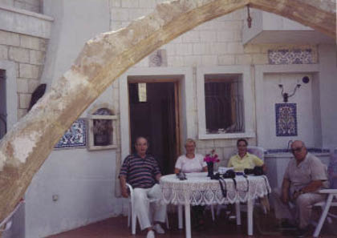

Taşlara ve kemerlere duyduğum amatör ilgimden söz etmiştim. Daha önce yayınlanmış dört deneme kitabımda da bunlara değinirim.
Bu amatör merakımı Kıbrıs’ta da sürdürdüm. Üç dört ay içinde değişik yörelerden, rastgele ilginç kemer taşları topladım. Yol kenarına atılmış taşlardan, hendeklerin içine yağmur suları ile gömülenlere kadar her türlü taş vardı.
Bu taşlardan kemer yapmaya uygun olan yirmi dokuz tanesini seçtim. Ayaklar arasındaki mesafe yedi metre; kemerin ortasındaki en yüksek nokta üç metre olan bir kemeri üç hafta içinde ve yalnız başıma inşa ettim.
Sadece daha sonra sökülen tahta kalıpları bir işçiye yaptırdım. Hiç beton kullanmadım, zaten kemerin bütün esprisi budur; kendi kendini sıkıştırarak ayakta durur.
Mimar Sinan’ın o eşsiz kemerlerinde gördüğümüz gibi. Ortadaki “kilit taşı” da muhteşem bir şeydi; tesadüfen bir dostum bulup getirmişti.
Kemer, yeni eserim (!) bitmişti artık, şimdi sıra açılış merasimine gelmişti. Cumhurbaşkanı Rauf Denktaş’tan talepte bulundum: “Evin önünde büyük uğraşlarla inşa ettiğim bu kemerin kurdelesini kesmek lütfunda bulunur musunuz?” dedim.

31 Ağustos 1996, Erol Manisalı, Nuriye Manisalı, Birsen Midillili, Rauf Denktaş
Birkaç gün sonra kemerin başındaydık, kırmızı bir kurdele çekmiştim. Eşim Nuriye, komşulardan özenle bulduğu güzel bir makası Denktaş’a verdi. Kemerin başında tamı tamına beş kişiydik; Rauf Denktaş, komşumuz Atilla Midillili, eşi Birsen, Nuriye ve bendeniz.
Fotoğrafı da Atilla Midillili çekti, tarih 31 Ağustos 1996.
Bir süre sonra İstanbul’a döndüğümde doğru Yüksek Kaldırım’a gittim. Sarı bir pirinç levha yaptırdım. Üzerinde: “Bu Kemer KKTC Cumhurbaşkanı Rauf Denktaş Tarafından 31 Ağustos 1996 Tarihinde Açılmıştır” yazan bir levha.
O levha halen Zeytinlik Köyü’nün üzerindeki o mütevazı evin bahçesinde duruyor.
Kemeri kimin yaptığını yazmadım. Ben biliyorum ya o bana yeter...